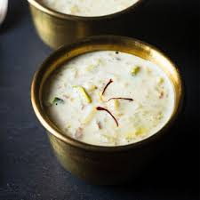

Dessert recipes
Kheer

Ingredients:
- 500 ml Milk (Doodh)
- 250 gms Rice (Chawal)
- 200 gms Sugar (Cheeni)
- 50 gms Ghee
- 3 tblsp chopped Nuts
Procedure:
- Pick and wash the rice.
- Soak in water for 30 minutes.
- Drain completely.
- Melt the ghee in a pan, add the drained rice and saute for 5-7 minutes on a medium flame.
- add the milk and cook on a low flame till the milk is reduced to 3/4th its original quantity.
- Add the sugar and simmer further till the milk is reduced to half its original quantity.
- Garnish with nuts.
Fruit Salad
Ingredients:
- Grapes - 200 grams
- Pomegranate - 1
- Mango - 1
- Apple - 1
- Cream - 1 cup (200 grams)
- Sugar - 3/4 cup (150 grams)
- Vanilla custard - more than 1/4 cup
- Milk - 1 ltr (full cream)
Procedure:
- Take milk in any vessel and place it on flame. Keep 3/4 cup cold milk for later use.
- Add custard powder in cold milk and stir until all lumps dissolve. After 4-5 minutes, when milk starts simmering, add custard batter steadily.
- Keep stirring the milk with help of a spoon. Add entire custard batter and mix nicely. Add sugar as well.
- Stir the milk-custard batter rigorously and cook for 7-8 minutes until it gets thick in consistency.
- Churn the cream and cut the fruits
- Add cream and fruits to the custard and serve chilled